お知らせ
v3.3 α版のお試しサイトを
準備しています
実際に触って、v3.3 の新機能をお試しいただけます
https://www.ablogcms.io/v303-alpha/お試しサイトの URL
TRAINING CAMP 2026
Ver.3.3
a-blog cms 最新アップデート情報
〜直近リリースからv3.3まで〜
2026.11.13（金）13:00 - 18:00 NAGOYA
a-blog cms Training Camp 2026
本日の内容
1
v3.3 のプロジェクトについて
バージョンごとの役割と、v3.3 までのスケジュール
2
v3.2 で先に入れた改善
v3.3 を待たずに出した改善（v3.2.25〜v3.2.36）
3
v3.3 の新機能
カスタムフィールド定義・REST API・ログインまわり・リダイレクトなど
4
まとめ
今のうちにやっておくこと
1. v3.3 のプロジェクトについて
v3.3 の正式リリースは 2027 年春ごろ。
入れる機能を絞って、じっくり仕上げます
2026.11.13アルファ版
2027 春ごろ正式リリース（未定）
1. v3.3 のプロジェクトについて ｜ ポイント
機能はバージョンの役割に照らして、どの版に入れるかを決めた
| 版 | 役割 | 本日紹介する主な機能 |
|---|---|---|
| v3.2 | 使い勝手の改善 すぐ出せるものは先に出す | PHP 8.5 対応・メールの Twig・管理画面の改善・グループ／埋め込み／HTML ブロック・CSV でのメディア取り込み・公式 Agent Skills |
| v3.3 | いちばん力を入れる版 AI から操作できる CMS とコンテンツ管理 | カスタムフィールド定義・REST API・パスキー・メール認証・リダイレクト管理・一括編集 など |
決め方 v3.3 の目玉につながる機能 → v3.3 ／ 地味だけどあると助かる改善 → v3.2 で先に
18の機能を紹介します（v3.2：9・v3.3：9）
1. v3.3 のプロジェクトについて ｜ 本日の機能（1/2）
v3.2 の機能は 8 つがリリース済み。Agent Skills は今日から本公開
| # | 機能 | チケット | 状態（2026.11.09 時点） |
|---|---|---|---|
| 1 | ライブラリの更新と PHP 8.5 対応 | CMS-7714 | リリース済み v3.2.27 |
| 2 | メールテンプレートの Twig 対応 | CMS-7659 | リリース済み v3.2.25 |
| 3 | エントリー管理のタグ絞り込み・サブカテゴリー対応 | CMS-7729 | リリース済み v3.2.27 |
| 4 | 作成後に、作成したデータの編集画面へ移動 | CMS-7724 | リリース済み v3.2.29 |
| 5 | ブロックエディター：グループブロック | CMS-7719 | リリース済み v3.2.36 |
| 6 | ブロックエディター：埋め込みブロック | CMS-7720 | リリース済み v3.2.36 |
| 7 | ブロックエディター：HTML ブロック | CMS-7713 | リリース済み v3.2.36 |
| 8 | CSV インポートでのメディア取り込み（プロフェッショナル以上） | CMS-7715 | リリース済み v3.2.36 |
| 9 | 公式 Agent Skills の配布 | CMS-7716 | 本日 本公開 GitHub（10/30 から先行公開・最新は v0.1.1） |
1. v3.3 のプロジェクトについて ｜ 本日の機能（2/2）
v3.3 の機能は、9 つのうち 6 つをアルファ版に取り込み済み
| # | 機能 | チケット | 状態 |
|---|---|---|---|
| 10 | Ping 送信機能の廃止（あわせて対応 PHP が 8.3〜8.5 に） | CMS-7725 | アルファ版に取り込み済み |
| 11 | カスタムフィールドを管理画面で定義 | CMS-7722 | アルファ版に取り込み済み |
| 12 | REST API（AI からの操作に対応） | CMS-7717 | アルファ版に取り込み済み |
| 13 | Custom Field Editor（表形式の一括編集） | CMS-7718 | 未着手（計画） |
| 14 | カテゴリーの CSV インポート | CMS-7723 | 未着手（計画） |
| 15 | パスキー（WebAuthn）でのログイン | CMS-7730 | アルファ版に取り込み済み |
| 16 | 二段階認証にメール認証を追加 | CMS-7726 | アルファ版に取り込み済み |
| 17 | 管理画面でのリダイレクト管理 | CMS-7728 | アルファ版に取り込み済み |
| 18 | ユーザー・カテゴリー一覧の React 化 | CMS-7727 | 未着手（計画） |
v3.3 の機能は、正式リリースまでに仕様が変わることがあります。
2. v3.2 で先に入れた改善
v3.3 を待たずに、
毎日の運用でつまずく所から直しました
リリース済みの機能は、v3.2 系の最新版（v3.2.39）で使えます
土台ライブラリ更新・PHP 8.5
管理画面エントリー管理の絞り込み・作成後の遷移
入力グループ・埋め込み・HTML ブロック
移行CSV でのメディア取り込み
2. v3.2 で先に入れた改善 ｜ 機能 1 ｜ ライブラリの更新と PHP 対応
ライブラリを更新し、PHP 8.5 でも動くようにした
| 動く PHP | やること | |
|---|---|---|
| v3.2（v3.2.27 から） | 8.18.28.38.48.5 | 更新するだけ |
| v3.3 | 8.18.28.38.48.5 | 上げる前に、サーバーの PHP を 8.3 以上に |
2. v3.2 で先に入れた改善 ｜ 機能 2 ｜ メールテンプレートの Twig 対応
メールの文面も、公開側のテーマと同じ Twig で書ける
v3.2.24 まで公開側・管理画面：Twigメール：独自の記法だけ
v3.2.25 からテーマで Twig を有効→✓ メールも Twig で書ける
対象のメール
- フォームの自動返信・管理者宛
- 会員登録
- パスワード再設定
- 承認通知
- コメント通知 など
ファイルの探し方
どれが使われても、中身は Twig で処理
body.txt.twig → body.txt （HTML：body.twig → body.html.twig → body.html）どれが使われても、中身は Twig で処理
値の出し方公開側と同じ
{{ name.value }}・{{ name.array }}管理画面での直接入力一部のタグだけ（
if・for など。extends は不可）エラーのときログに警告を残し、従来の処理で送る
注意既存の本文に
{{ {% を文字として書いていないか確認2. v3.2 で先に入れた改善 ｜ 機能 3 ｜ エントリー管理の絞り込み（1/2）
エントリー管理で、タグやサブカテゴリーでも記事を絞り込める
v3.2.26 までカテゴリーステータス期間ユーザー✕ タグでは探せない
v3.2.27 から＋ タグ＋ サブカテゴリーの記事✓ 準備なしで使える
タグで絞り込むペット可 ＋ オートロック → 両方を持つ記事
タグの候補選んだタグと一緒に使われているタグだけが残る
カテゴリーで絞り込むメインカテゴリーに加えて、サブカテゴリーに入れた記事も出る（同じ記事は 1 回だけ）
2. v3.2 で先に入れた改善 ｜ 機能 3 ｜ エントリー管理の絞り込み（2/2）
エントリー管理で、一緒に使われているタグだけが候補に残る
① タグを選ぶ：「ペット可」を選ぶと、一緒に使われているタグだけが候補に

② 検索する：「ペット可」のエントリーだけが並ぶ
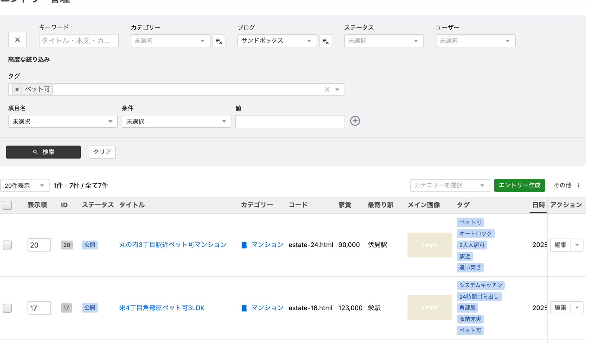
画面：v3.2 系のローカル環境（バージョン定数 3.2.39）。データはサンプルです。
2. v3.2 で先に入れた改善 ｜ 機能 4 ｜ 作成後に編集画面へ移動（1/2）
作成後は編集画面へ進むので、同じものを二重に作らない
v3.2.28 まで作成→新規作成画面のまま→✕ 直して押すと、もう 1 件できる
v3.2.29 から作成→作成したものの編集画面→✓ 二重に作らない
✓ 移動する
- カテゴリー
- ユーザー
- ユーザーグループ
- ロール
- フォーム
- ルール
- エイリアス
- ショートカット
- スケジュール
- Webhook
- コンフィグセット
△ ブログ今の画面に留まり、メッセージのリンクから移動
↪ 以前から移動
- エントリー
- モジュール ID
✕ 移動しない「カテゴリー追加」のモーダル（作成すると閉じて、選択欄に反映）
準備は不要（v3.2.29 以降に更新すれば使える）。コンフィグセットにはテーマセット・編集画面セットを含む。
2. v3.2 で先に入れた改善 ｜ 機能 4 ｜ 作成後に編集画面へ移動（2/2）
作成した直後の画面を、以前と比べる
v3.2.28 まで：新規作成の画面のまま。ボタンは「作成」

v3.2.29 から：編集画面へ移る。ボタンは「保存」「削除」

画面：左は v3.2.28 相当、右は v3.2 系（バージョン定数 3.2.39）のローカル環境。データはサンプルです。
2. v3.2 で先に入れた改善 ｜ 機能 5 ｜ グループブロック（1/5）
複数のブロックを 1 つにまとめ、見た目を付けられる
これまで✕ 複数のブロックに、まとめて背景色や余白を付けられない
v3.2.36 から✓ グループで囲んで、見た目を選ぶ
グループにするツールバーの「グループ化」・
/group・挿入メニュー・Mod+G （解除は Mod+Shift+G）選べる見た目
- HTML 要素（div・section・aside など）
- スタイル（class）
- 背景色
- 読み上げ用のラベル
例記事の途中に、背景色の付いた「お知らせ」の枠を作る
2. v3.2 で先に入れた改善 ｜ 機能 5 ｜ グループブロック（2/5）
ブロックを選んで「グループ化」し、ツールバーで見た目を選ぶ
① 選んでグループ化：段落を選び「グループ化」（⌘G）
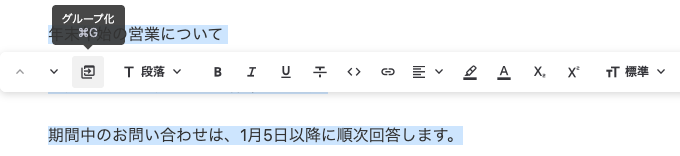
③ できあがり：3 つの段落が 1 つの枠に
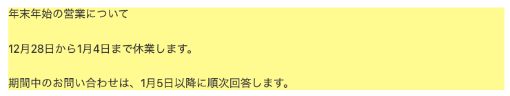
② 見た目を選ぶ：要素・スタイル・背景色
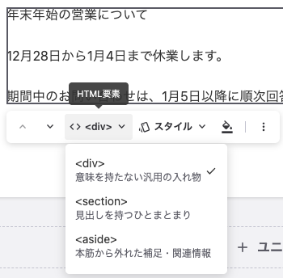
画面：v3.2.38（ローカル環境）。HTML 要素とスタイルの選択肢はブロックエディター設定で変わります。
2. v3.2 で先に入れた改善 ｜ 機能 5 ｜ グループブロック（3/5）
グループは「囲む」、カラムは「横に並べる」
| グループブロック | カラムブロック | |
|---|---|---|
| 形 | <aside> など 段落 段落 |
<div> 列 段落 列 段落 |
| 役割 | まとめて囲む | 横に並べる（1〜3 列） |
| 外側の要素 | 選べる（div・section・aside など） | 常に div |
| 見た目 | スタイル（class）と背景色 | 列の数で CSS グリッドが決まる |
2 つは入れ子にできる（例：カラムの各列にグループを入れ、背景付きのカードを横に並べる）。
2. v3.2 で先に入れた改善 ｜ 機能 5 ｜ グループブロック（4/5）
選べる要素とスタイルは、ブロックエディター設定で決める
HTML 要素div section aside（既定）＋ article・header・footer・nav も選べる
クラスラベルと class を登録。「一発グループ化」でワンクリックでグループ化
背景色ツールバーに出すかどうか（既定は表示）
制作者
テーマの CSS で、囲み・強調などの class を用意
管理者
ブロックエディター設定に class を登録
運用する人
ツールバーで選ぶだけ
既存のサイト：ブロックエディター設定を保存済みなら、ブロックメニューに「グループ」を追加
2. v3.2 で先に入れた改善 ｜ 機能 5 ｜ グループブロック（5/5）
選べる要素とスタイルは、設定の画面で登録する
ブロックエディター設定：上で要素を並べ、下でスタイル（class）を登録
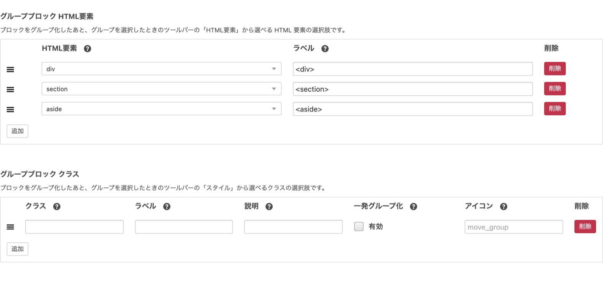
画面：v3.2 系のローカル環境（バージョン定数 3.2.39）。データはサンプルです。
2. v3.2 で先に入れた改善 ｜ 機能 6 ｜ 埋め込みブロック（1/3）
URL を入れるだけで、動画や SNS の投稿を記事に埋め込める
これまで✕ 埋め込み用の HTML を手で貼る
v3.2.36 からURL を入れる→確定→✓ プレビューが出る
ツールバーで調整配置・表示サイズ・キャプション・新しいタブで開く
取得に失敗したら再試行・URL を変更・リンクに変換
例イベントの報告に動画を入れる／SNS の投稿を引用する
2. v3.2 で先に入れた改善 ｜ 機能 6 ｜ 埋め込みブロック（2/3）
URL を入れて「埋め込む」を押すと、編集画面でプレビューされる
① URL を入れる：「埋め込む」を押す

② サイトの URL：画像・タイトル・説明のカード
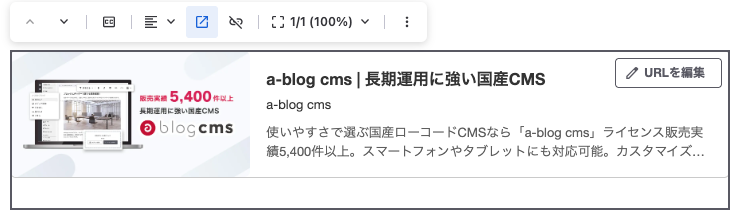
③ 動画の URL：動画のプレーヤー
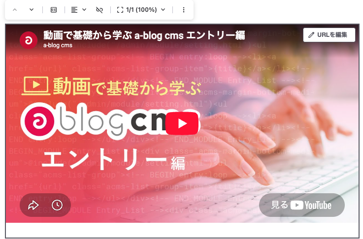
画面：v3.2 系のローカル環境（バージョン定数 3.2.39）。例として a-blog cms の公式サイトと公式動画を埋め込んでいます。
2. v3.2 で先に入れた改善 ｜ 機能 6 ｜ 埋め込みブロック（3/3）
埋め込んでよいサービスは、既存の許可リスト（YAML）で決める
許可リストにある→サービスの埋め込み（動画・地図など）
許可リストにない→タイトル・画像のカード
取得に失敗→カード、またはリンクに変換
サービスを足すとき設定ファイルの許可リストにホストを追加
extends_html_purifier_iframe_allowed_hosts決まりごと埋め込み専用の設定はない・主な動画と地図は最初から許可・サーバー側でもう一度サニタイズ
既存のサイト：ブロックメニューに「埋め込み」を追加
2. v3.2 で先に入れた改善 ｜ 機能 7 ｜ HTML ブロック（1/2）
ブロックエディターの中に、自由な HTML を書ける
これまで✕ エディターの中に自由な HTML を書けない
v3.2.36 からコードを書く→✓ 隣のプレビューですぐ確認
script・form が公開側に出るか（
private/config.system.yaml の strip_dangerous_tag）| 設定 | 公開側の出力 |
|---|---|
| on 同梱の設定 | 出力するときに取り除く |
| off この行がないサイト | 書いた HTML がそのまま出る |
- 管理画面にはこの設定がない。使える人を権限で絞る仕組みもない
- 既存のサイトは、ブロックメニューに「HTML」を追加
2. v3.2 で先に入れた改善 ｜ 機能 7 ｜ HTML ブロック（2/2）
左に HTML を書くと、右のプレビューにすぐ反映される
「HTMLを編集」：左がコード、右がプレビュー
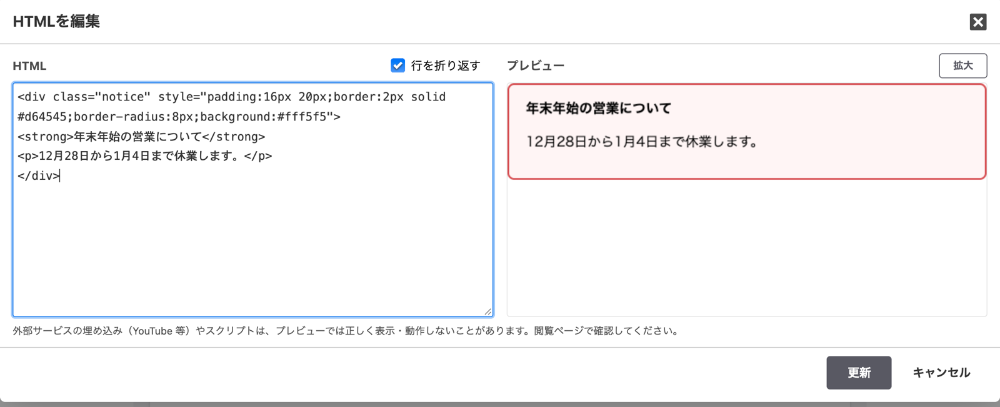
画面：v3.2 系のローカル環境（バージョン定数 3.2.39）。データはサンプルです。画面の注記のとおり、外部サービスの埋め込みやスクリプトはプレビューでは正しく動かないことがあります。
2. v3.2 で先に入れた改善 ｜ 機能 8 ｜ CSV インポートでのメディア取り込み（1/2）
CSV の移行で、画像やファイルもメディアに取り込める
これまで記事：CSV画像・ファイル：手で登録し直す
v3.2.36 からCSV に書く→✓ メディアに自動で登録プロフェッショナル以上
CSV の列名に付ける
@media（メディアのフィールド）・@block-editor（本文の画像・ファイル）ファイルの置き場所
archives/csv-import/source/ URL を書いても、ネット経由では取りに行かないやり直しやすい
- ドライラン
- 失敗した行だけ取り込み直し
- 二重に登録しない
2. v3.2 で先に入れた改善 ｜ 機能 8 ｜ CSV インポートでのメディア取り込み（2/2）
書き方とドライランは、CSV インポートの画面で確かめられる
CSV インポート：書き方と置き場所は画面の説明に。「ドライラン」で保存せずに確認
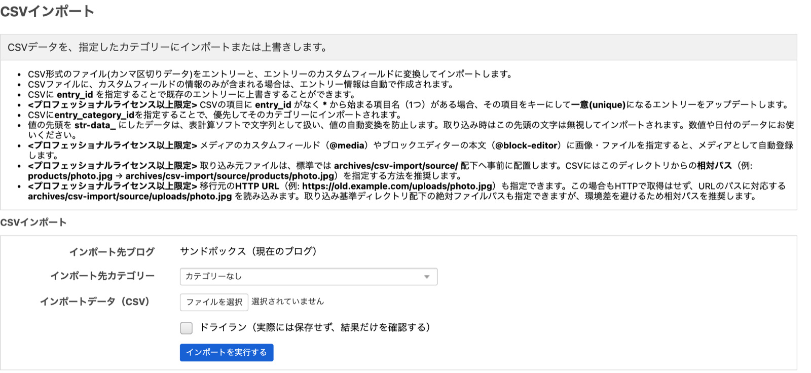
画面：v3.2 系のローカル環境（バージョン定数 3.2.39）。データはサンプルです。
2. v3.2 で先に入れた改善 ｜ 機能 9 ｜ 公式 Agent Skills の配布
AI が a-blog cms の作法でテーマやプラグインを書けるように
これまで✕ AI が a-blog cms の書き方を知らず、使えないコードになりがち
今日から本公開appleple/acms-agent-skills（MIT）✓ 15 のスキル
| プラグイン | スキル | 中身 |
|---|---|---|
| サイト制作用 | 9 | テーマ・テンプレート・フォーム・カスタムフィールドなど |
| プラグイン開発用 | 3 | PHP の拡張・管理画面の JS プラグインなど |
| 共通 | 3 | 依頼の振り分け・バージョンの判定・バージョンアップ |
使い方いつもどおり頼むだけ（例：「お問い合わせフォームを作って」）
使えるエージェントClaude Code・Codex・GitHub Copilot・Cursor など
入れ方（Claude Code）：
claude plugin marketplace add appleple/acms-agent-skills → claude plugin install acms-site-builder@acms-agent-skills。対象は a-blog cms Ver. 3.2 以上。3. v3.3 の新機能
フィールドの形を CMS が覚えて、
人からも AI からも扱えるようにします
開発中の内容です。正式リリースまでに変わることがあります
前提PHP 8.3〜8.5・Ping 廃止
目玉カスタムフィールド定義・REST API
ログインパスキー・メール認証
運用リダイレクト・一覧
3. v3.3 の新機能 ｜ 機能 10 ｜ 変わる前提
v3.3 は PHP 8.3〜8.5 で動き、Ping 送信はなくなる
① 動く PHP が 8.3〜8.5 に
| v3.2 | 8.18.28.38.48.5 |
| v3.3 | 8.18.28.38.48.5 |
② Ping 送信の廃止v3.2.0 から非推奨・ほとんど使われていない
なくなるものダッシュボードの「Ping送信」ボタン・コンフィグの「Pingショット」欄・送信の処理とテンプレート
- 上げる前に、サーバーの PHP を確認
- 独自テーマ・拡張で Ping 送信を使っていたら外す
3. v3.3 の新機能 ｜ 機能 11 ｜ カスタムフィールドの定義
カスタムフィールドを、HTML を書かずに管理画面で追加できる
これまでテーマに HTML を書く✕ 運用者は足せない・AI から項目が読めない
v3.3「フィールド定義」で型を選ぶ→✓ 編集画面に入力欄が出る
型（32 種類）テキスト・数値・日時・メディア・エントリーの参照・地図・ブロックエディター など
使える場所エントリー・カテゴリー・ブログ・ユーザー・モジュール
いまのフィールドテーマに書いたカスタムフィールドは、そのまま動く
詳しくは、宇井さんの発表で紹介します
CMS-7722 はアルファ版に取り込み済みです。正式リリースまでに仕様が変わることがあります。
3. v3.3 の新機能 ｜ 機能 12 ｜ REST API
外部のシステムや AI から、サイトのデータを読み書きできる
社内システム新着情報を自動でエントリーに
AI エージェント記事の下書きを作る
⇄
REST API/rest-api/acms/v1/…
⇄
a-blog cms
できることエントリー・メディア・カテゴリー・ユーザーなどの読み書き
安全面既定は無効。ユーザーごとのトークンで認証し、権限の範囲で操作
AI から直接MCP サーバーを内蔵（こちらも既定は無効）
詳しくは、宇井さんの発表で紹介します
CMS-7717 はアルファ版に取り込み済みです。正式リリースまでに仕様が変わることがあります。
3. v3.3 の新機能 ｜ 機能 13・14 ｜ 一括編集とカテゴリーのインポート（計画）
大量のデータを、まとめて直す・まとめて作る手段を用意する
Custom Field Editor 計画カスタムフィールドを、表の形でまとめて直す
カテゴリーの CSV インポート 計画階層のあるカテゴリーを、CSV からまとめて作る
詳しくは、宇井さんの発表で紹介します
未着手のため、Jira の計画（CMS-7718・CMS-7723）をもとにしています。
3. v3.3 の新機能 ｜ 機能 15 ｜ パスキー（1/3）
指紋・顔・PIN のパスキーで、パスワードなしでログイン
パスワード✕ 漏えい・使い回し・偽サイトへの入力・毎回の手間
v3.3「パスキーでログイン」→指紋・顔・PIN→✓ ログイン（二段階認証は不要）
使い方は 2 通り1 段目：パスワードの代わり ／ 2 段目：二段階認証の手段
別々に有効にできる管理ログイン・会員サインイン
条件https のサイトだけ（開発用の localhost は例外）・PHP 8.3〜8.5
3. v3.3 の新機能 ｜ 機能 15 ｜ パスキー（2/3）
パスキーは複数登録でき、なくしたら管理者がリセットできる
サイトで有効にする
管理ログイン（
/login）と会員サインイン（/signin）で別々に。例：会員だけ有効ユーザーが登録する
端末ごとに複数。名前は「Mac の Chrome」のように自動。登録・削除の前に本人確認
なくしたら
管理者が「パスキーをリセット」で全部消す
自分自身には使えない
自分自身には使えない
2 段目としても使える 二段階認証の設定で、認証アプリ・メールと並ぶ手段の 1 つ
3. v3.3 の新機能 ｜ 機能 15 ｜ パスキー（3/3）
ログイン画面にボタンが増え、パスキーはユーザーごとの画面で登録する
① ログイン画面：「パスキーでログイン」のボタン
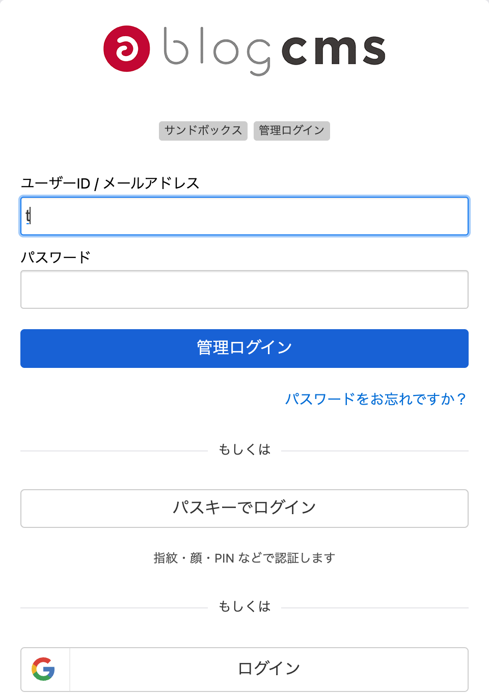
② ログイン設定：管理ログインとサインインで別々に有効にする
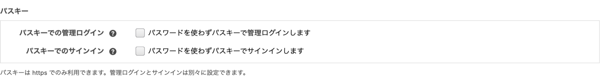
③ パスキーの登録：「このデバイスにパスキーを登録」から登録する
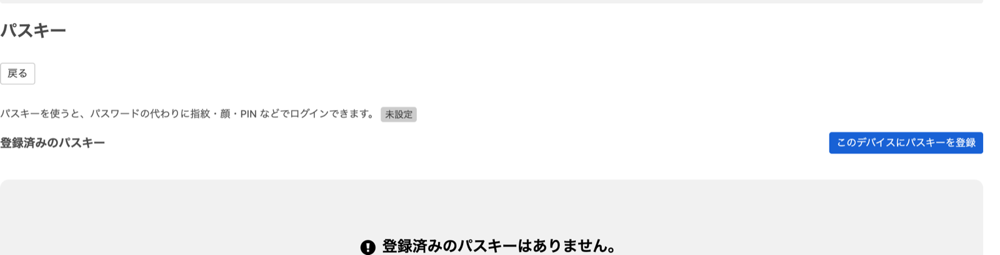
画面：v3.3 アルファ版のローカル環境。正式リリースまでに変わることがあります。
3. v3.3 の新機能 ｜ 機能 16 ｜ メールの二段階認証（1/3）
認証アプリがなくても、メールの確認コードで二段階認証できる
これまで認証アプリだけ✕ アプリを入れられない人・端末をなくした人が困る
v3.3パスワード→メールの確認コード→✓ ログイン
手段を選ぶ認証アプリ・メール・パスキーごとに「有効」と「メイン」を選ぶ
管理画面のユーザー設定・会員のマイページの両方
管理画面のユーザー設定・会員のマイページの両方
ログインのときメインが使えなければ、次の手段へ自動で切り替え。「別の方法で認証する」で選び直せる
例会員サイトで、会員にアプリを入れてもらわずに二段階認証
3. v3.3 の新機能 ｜ 機能 16 ｜ メールの二段階認証（2/3）
確認コードは短い時間で失効し、総当たりはロックで防ぐ
6 文字コードの長さ
10 分有効期限
60 秒再送の間隔
5 回再送でロック
5 回入力の失敗でロック
数値は既定値。
config.system.yaml で変えられる（管理画面にはない）。ロックの期間はログインの試行回数制限と同じ。使えるかどうかこれまでの「二段階認証」の設定に従う（メール専用の ON/OFF はない）
メールの文面
mail/tfa-email/ のテンプレートで変える使えない人メールアドレスを登録していないユーザー
3. v3.3 の新機能 ｜ 機能 16 ｜ メールの二段階認証（3/3）
認証手段ごとに「有効」と「メイン」を選ぶ
2 段階認証の設定：手段ごとに「有効」と「メイン」を選ぶ
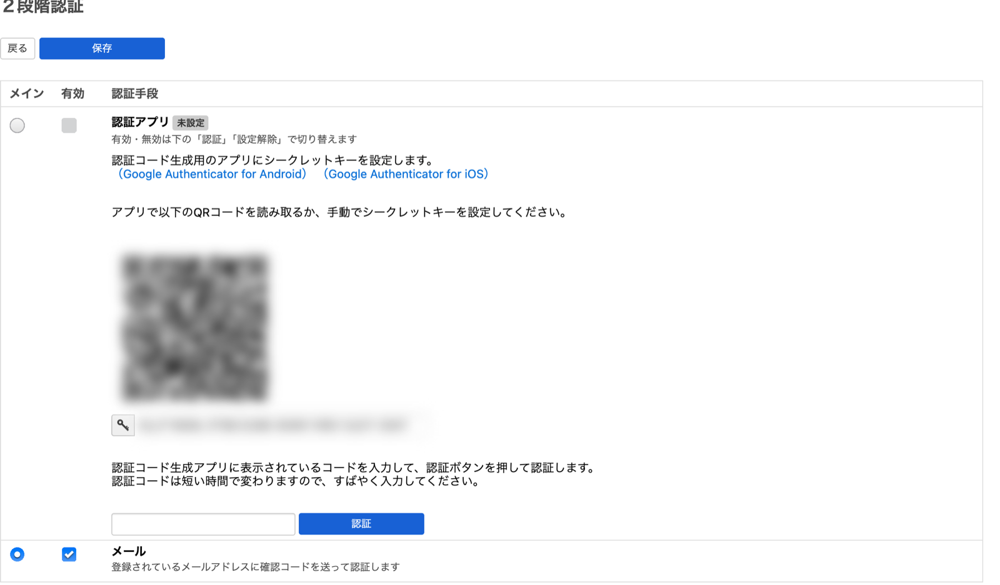
画面：v3.3 アルファ版のローカル環境。正式リリースまでに変わることがあります。認証アプリの QR コードとシークレットキーはぼかしています。
3. v3.3 の新機能 ｜ 機能 17 ｜ リダイレクト管理（1/3）
URL の転送を、.htaccess を触らずに管理画面で設定できる
これまで.htaccess を手で書く✕ 運用者だけでは難しい・書き間違えると表示されない
v3.3管理画面の「リダイレクト」→✓ ルールを登録して、ドラッグで順番を決める
例：まとめて転送
/news/(\d+).html → /topics/$1/ 301一致のさせ方完全一致・前方一致・正規表現
ステータスコード301（既定）・302・307・308 ／ 410・451 は転送せず終了を返す
転送先サイト内のパス、または外部の URL
3. v3.3 の新機能 ｜ 機能 17 ｜ リダイレクト管理（2/3）
既定は「404 のときだけ」転送。表示できるページは邪魔しない
判定の順番
「常に」のルール→通常のページ→「404 のときだけ」のルール（既定）→エントリーコードでの転送
保存のときに止める正規表現の書き間違い・同じルールの重複・転送のループ
転送しないもの管理画面・API・メディア・非公開や IP 制限のページ
今回は入れないCSV 一括登録・404 のログ・ヒット数
ルールはブログごと（下の階層にも適用）。編集できるのは管理者。CMS-7728 はアルファ版に取り込み済みです。正式リリースまでに仕様が変わることがあります。
3. v3.3 の新機能 ｜ 機能 17 ｜ リダイレクト管理（3/3）
ルールは一覧で優先順位を並べ、1 件ずつ詳細を設定する
① 一覧：ドラッグで優先順位を変える
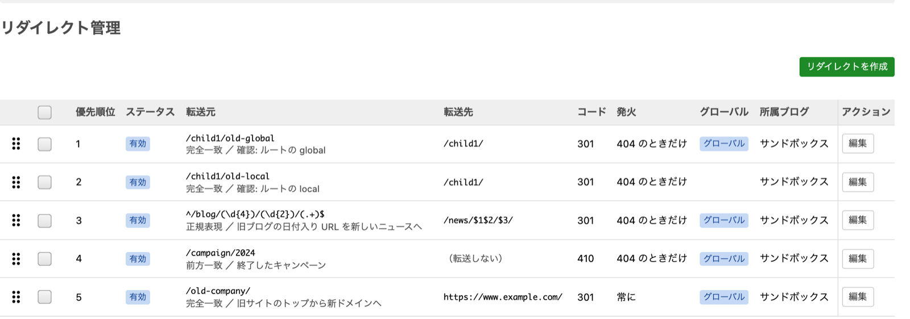
② 詳細：一致のさせ方・コード・転送先・タイミング
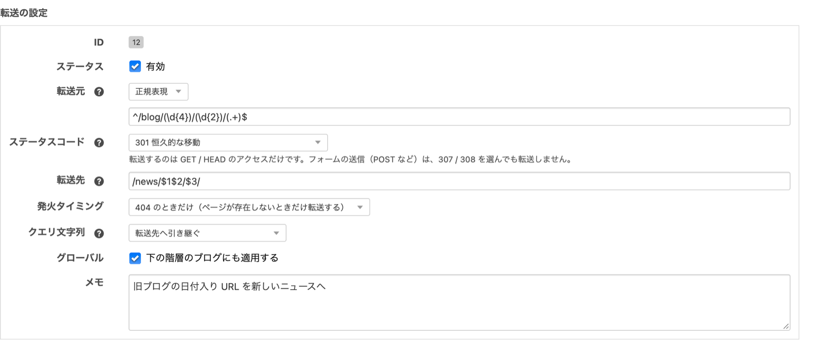
画面：v3.3 アルファ版のローカル環境。正式リリースまでに変わることがあります。
3. v3.3 の新機能 ｜ 機能 18 ｜ ユーザー・カテゴリー一覧の React 化（計画）
ユーザー・カテゴリー一覧も、エントリー一覧と同じ操作感に
いま✕ 並べ替え・絞り込み・まとめての操作がしにくい
予定 計画エントリー一覧の共通部品で作り直す
できるようになる列で並べ替え・絞り込み・複数選択でまとめて操作
例：会員をまとめて選んで、権限やステータスを変える
例：会員をまとめて選んで、権限やステータスを変える
気をつけることいまの検索・絞り込みは使える・権限がなければまとめての操作は出さない・件数が多くてもページ送り
進め方まずどちらか 1 画面で作ってみて、様子を見ながら広げる
未着手のため、Jira の計画（CMS-7727）をもとにしています。
4. まとめ
今のうちにやっておくこと
1
v3.2 で使える
エントリー管理の絞り込み・作成後の遷移・メールの Twig・CSV でのメディア取り込み
2
ブロックエディター
グループ・埋め込み・HTML で、できることが増えた
3
v3.3 の目玉
フィールド定義と REST API で、AI からもサイトを操作できる
4
ログインと URL
パスキー・メール認証・リダイレクト管理
5
変わる前提
v3.3 は PHP 8.3〜8.5。Ping 送信はなくなる
帰ったらやっておきたいこと
- 担当サイトを v3.2 系の最新版（v3.2.39）にする
- ブロックメニューに「グループ」「埋め込み」「HTML」を追加する
- 独自テーマ・拡張で Ping 送信を使っていないか確認する
- Twig のテーマなら、メールテンプレートの記法を確認する
- サーバーの PHP を 8.3〜8.5 にできるか確認する
- .htaccess に書いた転送を洗い出しておく